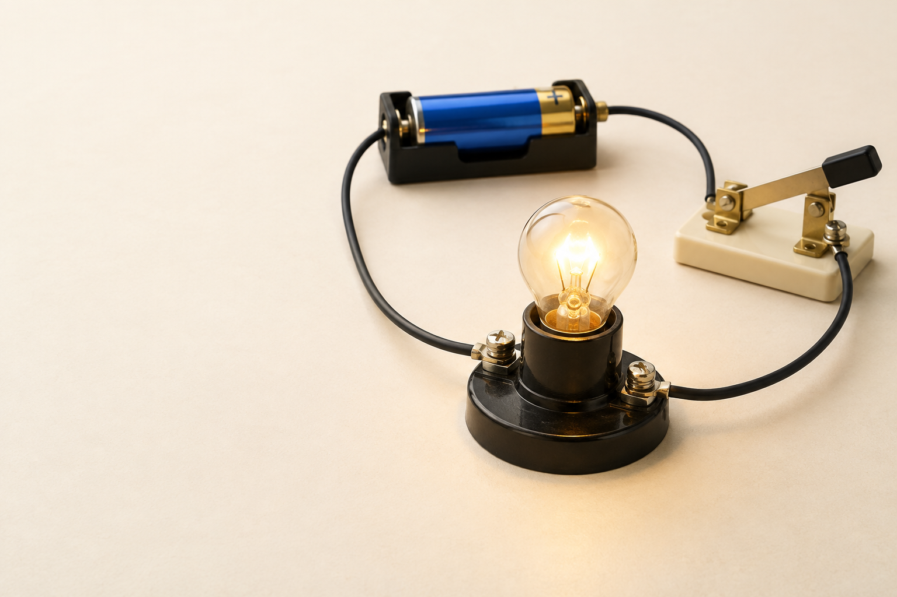

中2 理科・物理
回路

中2 理科 回路SeeD EDUCATION
スイッチを閉じると？
観察豆電球がつく
道がつながると電気が流れる
中2 理科 回路SeeD EDUCATION
ひと回り、道がつながっている
電気が流れる道すじ回路
電池・豆電球などをつなぐ線導線
中2 理科 回路SeeD EDUCATION
電池を、記号で表す
電池の記号長い線が＋極
反対側の短い線−極
中2 理科 回路SeeD EDUCATION
豆電球を、記号で表す
この記号が表すもの豆電球
中2 理科 回路SeeD EDUCATION
スイッチを、記号で表す
道をつなぐ・切るスイッチ
閉じたとき道がつながる
中2 理科 回路SeeD EDUCATION
導線は、一本の線で表す
器具と器具をつなぐ導線
図では直線で分かりやすく描く
中2 理科 回路SeeD EDUCATION
この計器の名前は？
Aの表示が目印電流計
中2 理科 回路SeeD EDUCATION
もう一つの計器
Vの表示が目印電圧計
中2 理科 回路SeeD EDUCATION
実物と、同じつながりを描く
器具を記号に置き換えた図回路図
確かめるのは何と何がつながっているか
中2 理科 回路SeeD EDUCATION
この回路を、描いてみよう
まずは電池の記号
次に豆電球とスイッチ
最後に導線でつなぐ
中2 理科 回路SeeD EDUCATION
電球を二つ、一本道につなぐ
電球を順番につなぐ直列つなぎ
道をたどると枝分かれがない
中2 理科 回路SeeD EDUCATION
一本道は、途中で分かれない
どちらの電球も同じ一本道の途中にある
中2 理科 回路SeeD EDUCATION
二つの道に、枝分かれする
途中で道を分けてつなぐ並列つなぎ
二つの道はあとで合流する
中2 理科 回路SeeD EDUCATION
分かれる場所と、合わさる場所
二つの電球は同じ二つの接続点の間にある
中2 理科 回路SeeD EDUCATION
置き場所が変わっても？
曲がり方が変わっても枝分かれはない
このつなぎ方は直列つなぎ
中2 理科 回路SeeD EDUCATION
電球が、そろっていなくても？
電球の位置がずれていても二つの道に分かれる
このつなぎ方は並列つなぎ
中2 理科 回路SeeD EDUCATION
ここを切ると、どちらが消える？
一本道を切ると両方とも消える
理由どちらも道が途切れる
中2 理科 回路SeeD EDUCATION
一方の枝だけを切ると？
切った枝の電球は消える
もう一方の枝は道がつながったまま
中2 理科 回路SeeD EDUCATION
枝分かれする前を切ると？
並列つなぎでも両方とも消える
理由共通の道が途切れる
中2 理科 回路SeeD EDUCATION
直列の回路図を、描いてみよう
器具を記号に置き換える
二つの電球を一本道の途中へ
導線をたどって枝分かれがないか確認
中2 理科 回路SeeD EDUCATION
並列の回路図を、描いてみよう
器具を記号に置き換える
二つの電球を別々の枝へ
枝の両端を同じ二つの点につなぐ
中2 理科 回路SeeD EDUCATION
覚えること
回路図器具を記号で表した図
直列つなぎ枝分かれのない一本道
並列つなぎ道が分かれ、あとで合流する
中2 理科 回路SeeD EDUCATION